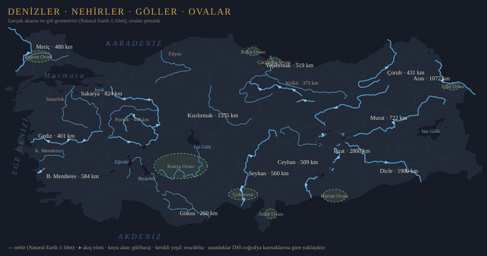
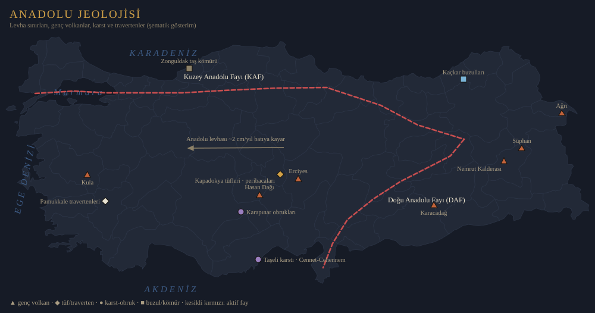

📚 Akademik temelli
İçerikler hakemli yayınlar, açık erişimli kaynaklar ve birincil belgelerle desteklenir.
Sadece meraklılar için
YAMA Kültür; okuyarak gezenler, gezerek düşünenler ve bir yerin yalnızca fotoğrafını değil, hafızasını da görmek isteyenler için tasarlanmış kültür platformudur.
YAMA Kültür, turizmi hızlı tüketimden çıkarıp tarih, edebiyat, arkeoloji, mimari, dil ve insan hikâyeleriyle zenginleşen bir keşif biçimine dönüştürmeyi amaçlar.
Neden YAMA?
İçerikler hakemli yayınlar, açık erişimli kaynaklar ve birincil belgelerle desteklenir.
Bir mekân yalnızca gösterilmez; zaman içindeki dönüşümüyle okunur.
Türkçe, Almanca ve İngilizce içerik mimarisiyle uluslararası erişim hedeflenir.
Yapay zekâ araştırmayı hızlandırır; kaynaksız bilgi üretmez.
Her önemli içerikte kullanılan kaynaklar ve güven düzeyi gösterilir.
Türkiye rotaları
Planla
81 ilin tamamı renkli ve tıklanabilir: coğrafi bölgeye göre filtrele, bir ile tıkla, o ilin kaynaklı anlatımları açılsın.
Haritayı aç →Rehberde noktaları ＋ ile sepetine ekle, sırala ve üç dilli tur belgeni PDF olarak al — gezgin, rehber ve acente modelleriyle.
Tur oluşturucuya git →Tematik yolculuklar
Doğa & Rotalar
Kültür rotaları coğrafyadan ayrı okunamaz: her dağın bir ufku, her yolun bir hafızası var. Dağ bağlantıları PeakFinder panoramasını açar; yürüyüş yolları resmî rota kaynaklarına gider.


Mavi Yolculuk 1950'lerde Bodrum'dan doğdu: sürgün geldiği kasabayı yurt edinen Halikarnas Balıkçısı'nın Ege sevdasını, Sabahattin Eyüboğlu ile Azra Erhat'ın süngerci tekneleriyle çıktıkları Gökova seferleri bir düşünce geleneğine dönüştürdü. Bu bir tatil biçimi değil, Anadolu hümanizminin denizden okunuşuydu: koylarda Homeros okumak, antik kentleri denizden selamlamak. Bugün Gökova, Hisarönü, Datça ve Göcek koylarında süren gulet gelenekleri bu mirasın devamıdır.
1925'te sürgün geldiği Bodrum'u yurt edindi; Ege'nin denizcilerini, süngercilerini ve mitolojisini Türk edebiyatına taşıdı. Mavi Yolculuğun fikir babasıdır — Bodrum'un dünyaya açılışı onun kaleminden başladı.
"Anadolu hümanizmi"nin kurucu kalemlerinden. 1950'lerde Azra Erhat ve dostlarıyla çıktığı Gökova seferlerini denemeleriyle ölümsüzleştirdi; Mavi Yolculuk kavramının yaygınlaşmasında öncüdür.
Mavi yolculukların görsel hafızası: "Karadut"un şairi, Anadolu motiflerini modern resme taşıdı; desenleri ve yazmalarıyla bu yolculukları bir sanat güncesine çevirdi.
Türk yelkenciliğinin pîri: 1965'te eşi Oda ile 10,5 metrelik Kısmet'in dümenine geçti, 1968'de dünya turunu tamamlayan ilk Türk denizci olarak Moda'da on binlerce kişiyle karşılandı. Mirası, denize saygıdır.
Bir şehri en iyi, onu yazan kalemle gezersiniz. Bu köşe, edebiyatın coğrafyasını rehberdeki gerçek rotalara bağlar.
Çırçır fabrikaları, ırgatlar ve bereketli toprağın romancısı: "Bereketli Topraklar Üzerinde"nin Adanası, pamuğun ve emeğin şehridir.
"İnce Memed"in dağları ile ovası: Toroslar'dan Çukurova'ya inen bu coğrafya, Türk edebiyatının en büyük destan sahnesidir.
"Beş Şehir"in en sert ve en vakur faslı: Tabyalar, çifte minareler ve dadaşların şehri, Tanpınar'da bir zaman meditasyonuna dönüşür.
Ankara, Erzurum, Konya, Bursa, İstanbul — beşi de rehberimizde. Tanpınar'ın "şehirlerin ruhu" fikri, YAMA Time'ın da ilham kaynağıdır.
YAMA Time
Şehirler; bugün, Cumhuriyet, Osmanlı, Bizans, Roma ve daha eski katmanlarıyla ele alınır. Hedef: mekânı yalnızca bugünkü görünümüyle değil, zaman içindeki anlamıyla okumak.
YAMA Research Protocol
YAMA Kültür, yapay zekâ tarafından rastgele üretilmiş içerikler sunmaz. Her önemli bilgi mümkün olduğunca akademik yayınlar, müze ve arşiv kaynakları, UNESCO belgeleri, seyahatnameler ve birincil kaynaklarla desteklenir.
Her rota önce hangi sorulara cevap verdiğini tanımlar.
DergiPark, tezler, hakemli makaleler ve üniversite yayınları taranır.
Seyahatnameler, kronikler, haritalar ve arşiv belgeleri dikkate alınır.
DergiPark YÖK Tez Türk Tarih Kurumu UNESCO Kültür Portalı TAY Projesi
Her rota sayfasında “Daha Derine İnmek İsteyenler” bölümü bulunur: seçilmiş akademik makaleler, kısa editoryal notlar, DOI veya açık erişim bağlantıları ve güven düzeyi.
YAMA Library
Kitaplar, makaleler, seyahatnameler, eski haritalar, belgeseller, podcastler ve dijital koleksiyonlar zamanla bu bölümde toplanır.
YAMA Academy
10–20 dakikalık rota hazırlıkları.
Tarih, mimari, arkeoloji ve dil notları.
Okuma listeleri ve rota dosyaları.
Katmanlı kültür haritaları.
Etkinlikler
Başkent'ten Beyoğlu'na, Diyarbakır'dan İzmir'e: KTB'nin şehirleri saran festival zinciri.
MS 2. yüzyıl tiyatrosunda opera: antik akustikte modern sahne — rehberdeki Aspendos'un yaşayan hâli.
İstanbul Müzik, Film, Tiyatro Festivalleri ve Bienal: şehrin çağdaş kültür ritmi.
Ülke genelindeki güncel etkinlikler: konserler, sergiler, festivaller — resmî takvim.
YAMA Journal
Trabzon — Sümela'nın kaya manastırından Uzungöl'e: Karadeniz'in dikey coğrafyasında inanç ve yayla. Rotayı aç →
Göbekli Tepe literatürü: DergiPark'taki hakemli makale havuzundan seçmeler — tarımdan önce tapınak tartışması. DergiPark'ta ara →
Evliya Çelebi (1611–1682): elli yılda üç kıta, on cilt Seyahatnâme. Kütahya'dan başlayan yolculuk. Seyahatnameler →